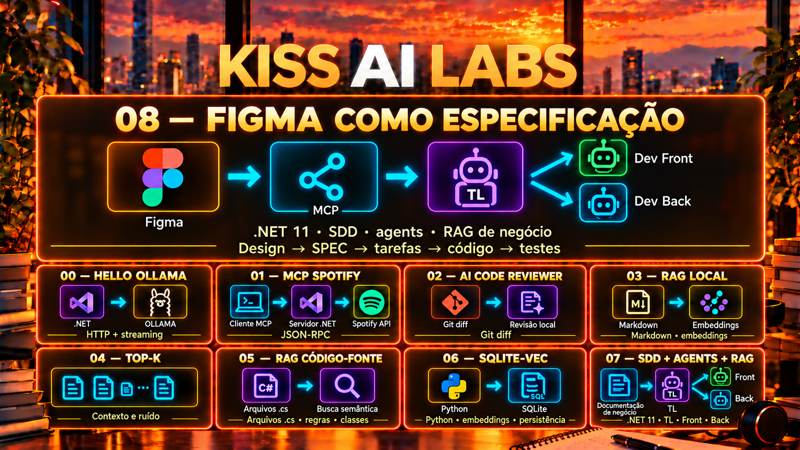

Hello Ollama
.NET 11 · OllamaSua primeira conversa com um modelo local, com resposta em streaming.
Explorar lab 00 →Keep It Simple, Stupid.
Do primeiro prompt aos agents que trabalham com especificações, código e contexto do negócio. Aprenda construindo projetos pequenos, com poucas peças.

Em destaque / Lab 08
Figma como especificação visual. RAG como contexto do negócio. Um TL coordena e delega para os agents de Front e Back, com uma demanda simples: simular descontos.
Inclui Spec Kit, cliente MCP e demonstração offline. O design está disponível por link; captura real do Figma e conformidade visual ainda não foram validadas.
A trilha
Siga a sequência ou escolha o problema que quer explorar.
Sua primeira conversa com um modelo local, com resposta em streaming.
Explorar lab 00 →Exponha ferramentas para buscar músicas e consultar a reprodução.
Explorar lab 01 →Use o contexto de um diff para apoiar a revisão de código.
Explorar lab 02 →Faça perguntas sobre Markdown usando embeddings e similaridade.
Explorar lab 03 →Compare contexto, relevância e ruído com diferentes valores de K.
Explorar lab 04 →Encontre regras e validações em C#, com arquivos e linhas como fontes.
Explorar lab 05 →Persista embeddings localmente. Validação da extensão nativa pendente.
Explorar lab 06 →Uma demanda KISS: TL delega Front/Back com regras de negócio e Spec Kit.
Explorar lab 07 →Conecte design, negócio e agents. Cliente testado com mocks; MCP real não validado.
Explorar lab 08 →Como chegamos até aqui
Os marcos da trilha, dos fundamentos à coordenação de agents.
Labs 07 e 08: Spec Kit, TL coordenando Front/Back, contexto de negócio e cliente Figma MCP. Lab 06 acrescenta persistência local com SQLite-vec.
Lab 05: recuperação de regras em arquivos C#, com referências de arquivo e linha.
Lab 04: comparação de Top-K para observar precisão, relevância e ruído.
Labs 00 a 03: Ollama, ferramentas MCP, revisão de código e RAG local em memória.